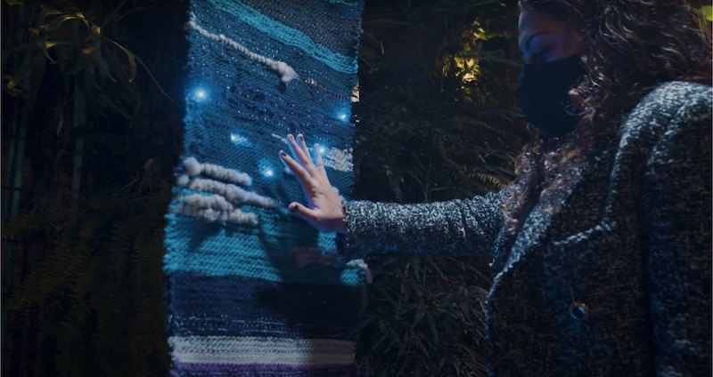
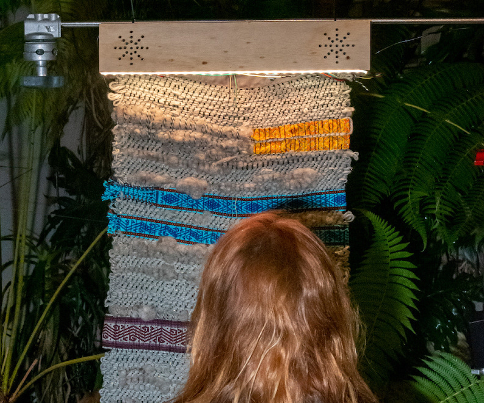
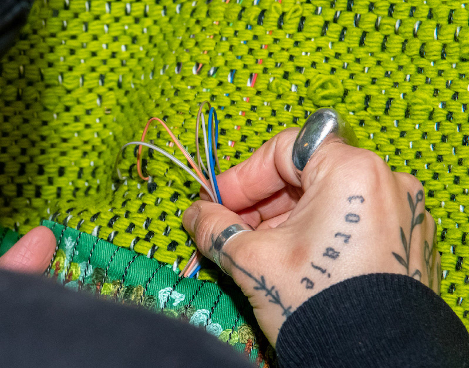
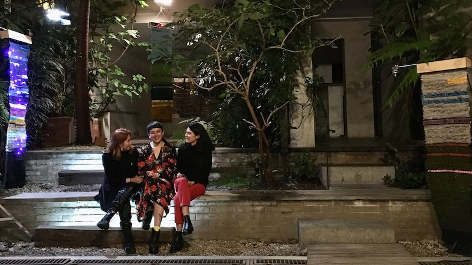

Ventanas de Encuentro is a series of three interactive landscapes that combine textile techniques and electronic sound circuits.
We worked hand in hand with textile artisans from the Pacific and Southwestern regions of Colombia to create an installation where threads become stories to convey other worlds.
Ventanas de Encuentro was a physical exhibition part of A través de la Ventana, a documentary series aired on public television to an audience of more than 10 million viewers.
Role: Interaction Design, Circuit and Electronics Design
Technologies: Arduino, Textiles, Electronics



